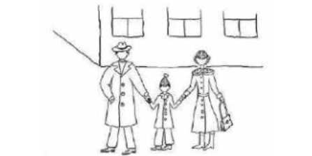
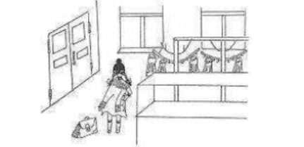
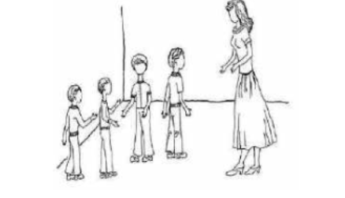

Өмір бояулары
«Өмір бояулары» электронды бағдарламасы психикалық дамуы тежелген 3 сыныпқа арналған бастауыш мектеп жасындағы балаларды оқыту принциптері мен ережелеріне сәйкес жасалған.
Бағдарламаның мақсаты – психикалық дамуы тежелген бастауыш сынып оқушыларының эмоционалды-ерікті саласын дамыту үшін жағдай жасау.
Міндеттері:
– эмоция түрлері (қуаныш, қорқыныш, ашуланшақтық, мейірімділік, таңдану, реніш, ойлану) және олардың көріністері туралы білімді қалыптастыру;
– өздерінің эмоционалдық күйлерін анықтау қабілетін дамыту;
– басқа адамдардың эмоционалды күйлерін анықтау қабілетін дамыту;
– эмоциялық күйлерін бақылау қабілетін дамыту;
– бағдарламаның практикалық тапсырмаларын орындау арқылы ерікті қасиеттерді дамыту.
«Өмір бояулары» электронды бағдарламасы арт-технологияларды қолдана отырып, түзету курсы бағдарламасының сабақтары әдеби оқумен (әдеби шығарманы оқи, қайталай, талдай білу, басты рөлдерді, кейіпкерлердің мінез-құлқының ерекшеліктерін, олардың эмоцияларын, драматизациясын бөліп көрсете білу), қазақ тілімен (берілген тақырып бойынша әңгіме құрастыра білу, өз ойын ауызша және жазбаша жеткізе білу) және бейнелеу өнері (сурет салу, эмоцияны қағазға түсіру үшін экспрессивті құралдарды таңдау), дене шынықтыру (ұсақ моториканы дамыту, қимылдарды үйлестіру, би), музыка (қарқынын, анализағын талдау, әуенді эмоциямен салыстыру).«Өмір бояулары» электронды бағдарламасы бейімделген негізгі жалпы білім беру бағдарламаларын іске асыратын жалпы білім беру ұйымдарының мұғалімдері үшін ерекше құнды, өйткені ол оқушылардың эмоциялар туралы білімдерін, эмоционалдық күйлер туралы идеяларын және олардан шығу жолдарын қалыптастыруға ықпал етеді. Осы түзету курсының сабақтарында оқушылар ерікті күш-жігерді көрсетуге, әртүрлі өмірлік жағдайларда эмоцияларын басқаруға, сыныптастарымен, ата-аналарымен, мұғалімдерімен және т.б. қарым-қатынас жасауға үйренеді.
«Өмір бояулары» электронды бағдарламасы 2 бөлімнен тұрады:
1. Диагностика
2. Дамыту сабақтары
Диагностика бөлімінде психикалық дамуы тежелген бастауыш сынып оқушыларының эмоционалды-ерік саласының қалыптасу деңгейін диагностикалық зерттеу бағдарламасы жасалды. Әр әдістеме баланың жан-жақты дамуын зерттеуге арналған. Диагностика бөлімінде балалардың эмоционалды жағдайды барабар тану мүмкіндігін бағалау, осы танудың дәлдігі мен сапасы (нәзік эмоционалды дифференциациялар), баланың жеке тәжірибесімен байланыстыру мүмкіндігін анықтауға мүмкіндік беретін Н.Я. Семагоның «Эмоционалды беттер» әдістемесі, мектептегі мазасыздық деңгейін анықтайтын А.М. Прихожанның «Мектептегі мазасыздықты диагностикалаудың проективті әдістемесі және Т.И. Шульганың оқушылардың ерікті қасиеттерінің даму деңгейін анықтауға арналған сауалнамасы бар.
Дамыту бөлімінде психикалық дамуы тежелген кіші мектеп жасындағы білім алушылардың эмоционалды-ерік саласын дамыту бойынша түзету жұмыстарын жүзеге асыру үшін арт-технологияларды қолдана отырып, 3 сыныпқа арналған «Өмір бояулары» түзету курсы бағдарламасы жасалды. Сабақтар жеке де, топта да өткізілуі мүмкін. Сабақтың топтық формалары баланың басқа балалармен қарым-қатынас қабілеттерін дамытуға мүмкіндік береді. Балалардың жеке мүмкіндіктерін ескере отырып, сабақтың ұзақтығы 15-тен 30 минутқа дейін созылуы мүмкін. Сабақтарды аптасына 1-2 рет өткізуге болады және бала материалды игерген сайын оларды біртіндеп арттырады. Бағдарлама педагогикалық факультеттердің студенттеріне, психикалық дамуы тежелген балалармен жұмыс істейтін мамандарға, психологтарға, тәрбиешілерге арналған, сондай-ақ бұл бағдарлама «Инклюзивті білім беру» жүйесінде ерекше білім беру қажеттіліктері бар балаларды «Тьюторлық сүйемелдеу», «Инклюзивті білім беру», «Психофизикалық даму ерекшеліктері бар балаларды психологиялық-медициналық-педагогикалық тексеру негіздері», "Психология"сияқты бакалавриат пәндері бойынша оқу процесінде пайдаланылуы мүмкін.
Авторы: Н.Я. Семаго.
Бұл әдісті 1993 жылы Н.Я. Семаго жасаған және осы танудың эмоционалды күйін, дәлдігі мен сапасын барабар тану мүмкіндігін бағалауға арналған. Ынталандыру материалы ретінде эмоционалды бет экспрессиясының екі сериясы қолданылады.
Әдістеменің мақсаты – эмоционалды жағдайды барабар тану мүмкіндігін бағалау, осы танудың дәлдігі мен сапасы (нәзік эмоционалды дифференциациялар), баланың жеке тәжірибесімен байланыстыру мүмкіндігі.
Мақсаты: эмоционалды жағдайды барабар тану мүмкіндігін бағалау, осы сәйкестендірудің дәлдігі мен сапасы (нәзік эмоционалды дифференциациялар), баланың жеке тәжірибесімен байланыстыру мүмкіндігі.
Ынталандыру материалы: эмоционалды бет экспрессиясының екі сериясы ынталандыру материалы ретінде қолданылады. Бірінші серия (1-сурет) беттердің контурлық (схемалық) кескіндерінен тұрады.Эксперименттік зерттеулерге сәйкес контурлық кескіндердегі эмоционалды экспрессия беттің ең логикалық маңызды элементтерімен белгіленеді: әр нұсқаға тән ауыздың бұрыштары мен қастардың кеңістіктік орналасуы.
2-серия (14 сурет) балалардың нақты беттерінің суреттерін қамтиды (ұлдар мен қыздар: сәйкесінше 7 сурет) (1-кесте). Әдістемеде келесі эмоционалды өрнектері бар фотосуреттер қолданылады:
1. Айқын қуаныш.
2. Қорқыныш.
3. Ашулану.
4. Достық.
5. Таңдану.
6. Реніш.
7. Ойлану.
| Эмоцияның аты | Ұл балаларға | Қыз балаларға |
|---|---|---|
| Айқын қуаныш | ||
| Айқын қуаныш | ||
| Айқын қуаныш | ||
| Айқын қуаныш | ||
| Айқын қуаныш | ||
| Айқын қуаныш | ||
| Айқын қуаныш |
Өткізу рәсімі
1-кезең.
Балаға баланың алдына кездейсоқ орналастырылған беттердің эскиздік бейнелері ұсынылады. Барлық суреттер баланың анык көрінетіндей орналасуы керек.
Нұсқаулық 1. «Мына беттерге қарап, әрқайсысының көңіл-күйі қандай екенін айт». Егер бала «көңіл-күй» сөзін түсінбесе, адамның жақсы немесе жаман болуы мүмкін екенін түсіндіруге болады. Осылайша, ешқандай жағдайда маманның өзі қандай да бір эмоционалды жағдайды ауызша айта алмайды. Бала «беттердің» көңіл-күйлерін атағаннан кейін, карталардың ретін өзгертіп, одан «көңіл-күйді» тағы бір рет атауын сұрау керек. Бұл «болжаудың» кездейсоқтығын болдырмау немесе кем дегенде азайту үшін жасалады. Балаға схемалық кескіндердің эмоционалды күйлерін атау процесінде экспериментатор пассивті болуы керек, яғни оны жағдай «итермелеген» болса да, баланың мәлімдемелерін қайта сұрамау, «қайта жасамау», қайталамау керек (яғни, бала осы эмоционалды күйді түсініп, дұрыс ауызша айтып жатқан сияқты сезінетін жағдайда бала оны өзі «ашу» керек). Эмоциялардың «атаулары» тұрғысынан да, атауға көмектесу тұрғысынан да кез-келген «кеңестердің» болмауы ережесі қатаң сақталуы керек.
2-кезең.
Бұл кезеңде балаға 2 сериялы суреттер ұсынылады: нақты фотосуреттер. Бұл жағдайда баланың жынысына сәйкес келетін фотосуреттер ұсынылады.
2-нұсқаулық (баланың жынысына байланысты өзгертіледі).
«Енді мен саған ұл (қыз) бейнеленген басқа суреттерді көрсетемін. Бұл суретке қарап бұл ұл (қыз) қандай көңіл-күйде деп ойлайсың?» Бала бұл көңіл-күйдің қандай екенін айтқаннан кейін: «Бұл көңіл-күйді не тудыруы мүмкін, неге ұл (қыз) мұндай көңіл-күйге ие?» деп сұрау қажет.
Бала эмоционалды күйлерді нақты суреттерде тиісті түрде бағалай алмайтын жағдайда, алғашқы үш-төрт рет дұрыс емес, эмоционалды күйлерді жеткіліксіз анықтағаннан кейін, бұл кезең аяқталады және балаға схемалық кескіндер ұсынылады (стандартты ұсынудың бірінші кезеңіне оралу). Егер схемалық кескіндер жеткіліксіз танылса, зерттеу аяқталуы керек.
3-кезең.
Барлық нақты суреттерді көрсету аяқталғаннан кейін (екінші кезең) зерттеудің проективті бөлігін тікелей жүргізуге болады. Балаға бұрын ұсынылған нақты суреттердің кез-келгені бойынша әңгіме, ертегі ойлап табу ұсынылады. Мұны істеу үшін нақты кескіндер зерттеудің бірінші кезеңінде жүргізілгендей ретпен (солдан оңға қарай) орналастырылады немесе балаға оларды өзі орналастыру туралы ұсыныспен қолына беріледі.
3-нұсқаулық. «Мына суреттерге қайта қара. Саған қайсысы ұнайтынын таңдап, ұлдың (тиісінше, қыздың) көңіл-күйін не тудыруы мүмкін, неге ол оны сезінетіні туралы әңгіме ойлап көр».
Егер балаға бұл тапсырманы бірден орындау қиынға соғатын болса, онда сіз жетекші сұрақты ұсына аласыз – оқыту көмегінің бір түрі: «Сенде осындай көңіл-күй қашан болғанын және оны не себеп болғанын есіңе түсіре аласың ба?». Егер екі сурет туралы сөйлескісі келсе, алдымен баланың бір-бірден (бірінші таңдаған), содан кейін ғана басқа фотосурет туралы әңгіме ойлап табуы қажет. Егер көптеген суреттер туралы әңгіме ойлап тапқысы келсе, бұл фактіні атап өту керек, бірақ тек екі фотосуретпен шектелу қажет.
Әңгіме жасау үшін кескінді таңдауда қиындықтар туындаған кезде психологқа ешқандай жағдайда «кеңестер» беруге болмайды. Суреттерді бала өзі таңдауы керек. Сіз таңдауды талап ете алмайсыз.
Нәтижелерді талдау:
Эмоционалды жағдайды бағалау критерийлері (1 және 2 кезең):
1. Эмоционалды күйлерді «белгі» бойынша да, күш бойынша да бағалаудың жеткіліктілігі.
2. Эмоционалды бейнелердің жарықтығы (баланың өзіне сәйкес мимикалық көрінісін қамтитын эмоционалды заряд).
3. Эмоционалды көріністерді саралау деңгейі және сәйкесінше тиісті сөздікті меңгерудің жеткіліктілігі.
4. Эмоционалды жағдайды қабылдауда инерттілік, тоқтап қалу немесе икемділік.
5. «Эмоциялар сөздігі» баланың белсенді сөздік қорымен, оның жасымен және аффективті жауап беру ерекшеліктерімен салыстырылады.
6. Эмоционалды күйзеліске байланысты «қақтығыс» аймақтарын анықтау.
7. Негізгі аффективті реттеу жүйесінің қалыптасу ерекшеліктері.
Бала шығарған және классикалық проективті түсіндіру тұрғысынан талданған әңгімелерде жоғарыда аталған көрсеткіштерден басқа мыналарды атап өту қажет:
– әңгіменің негізгі сюжеті;
– оның негізгі эмоционалды бояуы;
– ықтимал сәйкестендіру (оң және теріс);
– кінәні немесе айыптауды өзіне қабылдау (мұндай қабылдау орын алатын жағдайды анықтаған жөн);
– оқиғаның соңғы бөлігі – оның түйісуі.
Шартты нормативтік жауаптар:
1. 1-сурет үшін (айқын қуаныш) ең көп таралған жауаптар: «күледі», «қуанады».
2. 2-сурет үшін (қорқыныш): «қорқынышты», «қорқады», «қорқыныштан айқайлайды».
3. 3-сурет үшін (ашулану): «жаман көңіл-күй», «ашулану», «ренжу».
4. 4-сурет үшін (достық): «жақсы», «қуанады», «бәрі жақсы», «көңілді».
5. 5-сурет үшін (ұят, кінә): «қалыпты», «қайғылы».
6. 6-сурет үшін (реніш): «ашуланған», «ренжіген», «жылаған».
7. 7-сурет үшін (таңдану): «қуанышты», «қорқынышты және көңілді».
Көбінесе мектеп жасына дейінгі балалар бұл көңіл-күйді қалай атауға болатынын білмейді және оны өздеріне көрсетуге тырысады. Талданатын жас диапазонындағы балалар үшін 2, 5, 7 суреттері эмоцияның мағынасын түсіну үшін ғана емес, сонымен қатар номинация үшін де қиын. Бұл балалық шақтағы эмоциялар тілінің қалыптасу кезеңдерін сипаттайды және көрсетеді. Н.Я. Семаго эмоционалды жағдайды, осы сәйкестендірудің дәлдігі мен сапасын, баланың жеке тәжірибесімен байланыстыру мүмкіндігін барабар анықтауды сандық бағалауды көздемеді. Нәтижелерді сандық бағалау үшін «Н.Я. Семаго «Эмоционалды беттер» әдістемесі бойынша нәтижелерді бағалау бланкі» әзірленді (2-кесте).
2-кесте
Н.Я. Семаго «Эмоционалды беттер» әдістемесі бойынша нәтижелерді бағалау бланкі
| Бағалау критериі | Балл | Сапалы мінездеме | Бағалау |
|---|---|---|---|
| 1, 2-кезеңдерді бағалау | |||
| Эмоционалды жағдайларды бағалаудың барабарлығы | 2 балл | Суреттердегі эмоцияларды дұрыс анықтау | 8-6 |
| 1 балл | Суреттердегі эмоцияларды дұрыс анықтау | 5-3 | |
| 0 балл | Суреттердегі эмоцияларды дұрыс анықтау | 2-0 | |
| Эмоционалды жағдайларды бағалаудың барабарлығы | 2 балл | Суреттердегі эмоцияларды дұрыс анықтау | 8-6 |
| 1 балл | Суреттердегі эмоцияларды дұрыс анықтау | 5-3 | |
| 0 балл | Суреттердегі эмоцияларды дұрыс анықтау | 2-0 | |
| Эмоционалды бейнелердің жарықтығы | 2 балл | Суретке эмоциялардың жарқын көрінісі | |
| 1 балл | Суретке эмоцияның нашар көрінуі | ||
| 0 балл | Эмоциялық реакциялар көрсетпейді | ||
| Эмоциялық көріністерді саралау деңгейі және тиісті сөздікті меңгеру барабарлығы | 2 балл | Эмоциялық көріністерді саралайды және оларды сипаттай алады | |
| 1 балл | Эмоциялық көріністерді саралау және оларды сипаттау кезінде қиындықтарға ұшырайды | ||
| 0 балл | Эмоциялық көріністерді сараламайды және оларды сипаттай алмайды | ||
| Эмоциялық жағдайды қабылдаудағы инерттілік, тығындау немесе икемділік | 2 балл | Суретті тез қабылдау және оны бағалау | |
| 1 балл | Ұзақ уақыт қабылдау және суретке шоғырлану, бағалау кезінде қиындық | ||
| 0 балл | Эмоциялық жағдайды қабылдау кезіндегі инерттілік, тығындау | ||
| «Эмоция сөздігі» баланың белсенді сөздік қорымен, оның жасымен және аффективті әрекет ету ерекшеліктерімен салыстыруда. | 2 балл | Эмоциялық жағдайға синонимдерді таңдай алады | |
| 1 балл | Эмоциялық жағдайға синонимдерді таңдау қиынға соғады | ||
| 0 балл | Эмоциялық жағдайға синонимдерді іріктей алмайды | ||
| 2 балл | Сурет жағымсыз реакциялар тудырмады | ||
| 1 балл | Сурет диагностика барысына әсер етпейтін жағымсыз реакцияларды тудырды (мимиканың өзгеруі, таңғалу) | ||
| 0 балл | Сурет диагностика барысына әсер ететін жағымсыз реакцияларды тудырды (истерика, жылау, қызметтен бас тарту) | ||
| Базалық аффективті реттеу жүйесінің қалыптасу ерекшеліктері. | 2 балл | Зерттеушінің сұрағына жылдам жауап (10-15 сек) | |
| 1 балл | Зерттеушінің сұрағына жауап жеткілікті жылдам емес (15-30 сек) | ||
| 0 балл | Зерттеушінің сұрағына баяу жауап (30 сек-60 сек) | ||
| Негізгі әңгіме. | 2 балл | Білім алушы оқиғаны дәйекті түрде баяндайды, сюжетті баяндайды. | |
| 1 балл | Білім алушы оқиғаларды баяндау, сюжет баяндау кезінде шатасады. | ||
| 0 балл | Білім алушы сюжетсіз, байланыссыз әңгіме құрастырды. | ||
| Эмоциялық бояу | 2 балл | Жеткілікті | |
| 1 балл | Жеткіліксіз | ||
| 0 балл | Жоқ | ||
| Сәйкестендіру | 2 балл | Білім алушы әңгіме кейіпкерін өзімен (немесе жақын адамдармен) салыстырады | |
| 1 балл | Білім алушы әңгіме кейіпкерімен сәйкестендіруде қиындықтарға тап болады | ||
| 0 балл | Білім алушы әңгіме кейіпкерін өзімен (немесе жақын адамдармен) салыстырмайды | ||
| Кінәні немесе айыптауды өзіне қабылдау | 2 балл | Білім алушы болған оқиғаға кінәлі емес. | |
| 1 балл | Білім алушы болған оқиғаны ішінара өз мойнына алады. | ||
| 0 балл | Білім алушы болған оқиғаға өзін кінәлайды. | ||
| Әңгіменің соңы часть | 2 балл | Әңгіме қисынды аяқталды, оқиғалар қиылысы бар. | |
| 1 балл | Әңгіме жеткілікті түрде аяқталмаған, әңгіме қорытындысы болған жоқ.. | ||
| 0 балл | Әңгіме аяқталмаған, қорытындысы | ||
| Жалпы балл: | |||
| Деңгейі: | |||
Бағалау ғалым бөлген өлшемдерге сәйкес жүргізіледі. Критерийлердің әрқайсысы 0-ден 2-ге дейінгі ұпайлармен бағаланады. Барлық критерийлерді бағалағаннан кейін ұпайлар есептеледі және эмоционалды жағдайды барабар тану деңгейі, осы сәйкестендірудің дәлдігі мен сапасы (нәзік эмоционалды дифференциациялар), баланың жеке тәжірибесімен байланыстыру мүмкіндігі анықталады.
Эмоционалды жағдайды барабар тану деңгейін жалпы бағалау үшін осы сәйкестендірудің дәлдігі мен сапасы (нәзік эмоционалды дифференциациялар), баланың жеке тәжірибесімен байланыстыру мүмкіндігі келесі деңгейлерге бөлінеді: жоғары, орташа, төмен.
Бағалау көрсеткіштері:
Жоғары деңгей (24-17 балл) – білім алушы эмоцияларды дұрыс ажыратады, оларды бейнелей алады. Эмоционалды күйлерді сипаттау үшін ол синонимдерді қолданады. Оқушы толық оқиғаны ойлап тауып, болып жатқан оқиғалар мен кейіпкердің эмоционалды тәжірибесін егжей-тегжейлі сипаттай алады. Өзін кейіпкермен сәйкестендіреді. Орташа деңгей (16-9 балл) – білім алушы эмоцияларды дұрыс ажырата алмайды, оларды әрдайым бейнелей алмайды. «Эмоциялар сөздігі» жеткіліксіз дамыған. Құрастырылған әңгіме эмоционалды түрде боялмаған, нақты сюжет жоқ. Ол әрқашан кейіпкерді анықтай алмайды. Төмен деңгей (8-0 балл) – білім алушы эмоцияларды сараламайды, оларды бейнелей алмайды. Әңгіменің сюжеті жоқ, эмоционалды түрде боялмаған. Білім алушы өзін кейіпкермен сараламайды.
Авторы: А.М. Прихожан
Мектептегі мазасыздықты диагностикалаудың проективті әдістемесі
Әдістеменің мақсаты – мектептегі мазасыздық деңгейін анықтау.
Бұл әдісті таңдау көбінесе бастауыш сынып оқушыларының эмоционалды-ерік саласының бұзылуы олардың мазасыздық деңгейіне, эмоционалдық әл-ауқатына тікелей байланысты болатындығына байланысты.
Эксперименттік материал: әрқайсысында көлемі 18 х 13 см 12 суреттен 2 жиынтық.
«А» жиынтығы қыздарға арналған, «Б» жиынтығы – ұлдарға арналған.
| № | A | B |
|---|---|---|
| 1 |  | |
| 2 | ||
| 3 | ||
| 4 |  |
|
| 5 | ||
| 6 | ||
| 7 | ||
| 8 | ||
| 9 |  | |
| 10 | ||
| 11 |  | |
| 12 |
Әдістеме әрбір сыналушымен жеке жүргізіледі.
Өткізуге қойылатын талаптар жобалық әдістемелер үшін стандартты.
Жұмыс басталар алдында жалпы нұсқаулық беріледі. Бұдан басқа, кейбір суреттердің алдында қосымша нұсқаулықтар беріледі. Нұсқаулық: «Қазір сен суреттер бойынша әңгімелер ойлап табатын боласың. Менің суреттерім қарапайым емес. Қараңыз, олардың жүзі жоқ. Барлығы – ересектер де, балалар да – жүзсіз суреттелген (№1 сурет ұсынылады). Бұл ойлап табу қызықты болу үшін арнайы жасалған. Мен саған суреттерді, олардың бар-жоғы 12-сін көрсетемін, ал сен ұл (қыз) баланың әр суреттегі көңіл-күйі қандай және оның көңіл күйі неден екенін ойлап табуың керек. Сен білесің бе, көңіл-күй біздің бетімізде көрінеді. Көңіл күйіміз жақсы болғанда, жүзіміз көңілді, қуанышты, бақытты, ал жаман болса – мұңлы, қайғылы болады. Мен саған суретті көрсетейін, ал сен маған қандай ұлдың (қыздың) жүзі көңілді, мұңды, әлде басқа біреу екенін айтып бересің, және оның жүзі неге осындай екенін түсіндірерсің».
1-сурет бойынша тапсырманы орындау жаттығу ретінде қарастырылады. Оның барысында баланың оны меңгеруіне ұмтылу арқылы нұсқаулықты қайталауға болады. Содан кейін 2-12 суреттер жүйелі түрде ұсынылады. Әрқайсысын көрсетер алдында қыздың (ұлдың) беті қандай деген сұрақ қайталанады. Оның жүзі неге осындай? 2, 3, 5, 6, 10 суреттердің алдында балаға балалардың кейіпкерлерінің бірін таңдау және ол туралы әңгімелеу ұсынылады, Балалардың барлық жауаптары тіркеледі.
Алынған нәтижелерді өңдеу және бағалау. 10 суретке жауаптар бағаланады (2-11).
1-сурет – жаттығу. 12-сурет «буферлік» функцияны орындайды және баланың тапсырманы орындауды оң жауабымен аяқтауына арналған. Сонымен қатар, бала 12 карточкаға теріс жауап беретін сирек кездесетін жағдайларға (біздің мәліметіміз бойынша 5-7%-дан аспайтын) назар аударған жөн. Мұндай жағдайлар қосымша талдауды талап етеді және жеке қаралуға тиіс. Алаңдаушылықтың жалпы деңгейі суреттегі баланың көңіл-күйін мұңды, қайғылы, ашулы, сағынышты деп сипаттайтын сыналушылардың «қолайсыз» жауаптары бойынша есептеледі. 10-нан 7 және одан да көп осындай жауап берген баланы мазасыз деп есептеуге болады. Сыналушының жауаптарын суретті түсіндірумен салыстыра отырып, сондай-ақ бірнеше балалы суреттердегі кейіпкердің таңдауын талдай отырып (мысалы, 6-суретте – ол тапсырманы шешкен бірінші партадағы оқушыны немесе оны шешпеген екінші партадағы оқушыны таңдайды ма), деректерді сапалы талдау үшін бай материал алуға болады.
Оқушылардың мазасыздық деңгейін жалпы бағалау үшін келесі деңгейлер бөлінеді: жоғары, орта, төмен.
Жоғары деңгей (10-7 балл) – мазасыздықтың жоғары деңгейі байқалады.
Орташа деңгей (6-3 балл) – мектептегі мазасыздықтың орташа деңгейі байқалады.
Төмен деңгей (2-0 балл) – мектептегі мазасыздықтың төмен деңгейі байқалады.
Мектептегі мазасыздықты диагностикалау үшін проективті әдістеме бойынша эксперименттік зерттеу жүргізудің ыңғайлылығы үшін А.М. Прихожан тексеру бланкісін құрды (4-кесте).
Мектеп мазасыздығын диагностикалау үшін проективті әдістеме бойынша жауап парағы
| Карточка № | Оқушының жауабы | "Қолайсыз" жауап (+/-) |
|---|---|---|
| 1 | ||
| 2 | ||
| 3 | ||
| 4 | ||
| 5 | ||
| 6 | ||
| 7 | ||
| 8 | ||
| 9 | ||
| «Қолайсыз жауаптардың» жалпы саны" | ||
| Мектеп алаңдаушылығы деңгейі | ||
Авторы: Т.И. Шульга
Әдістеменің мақсаты: бақылау арқылы бастауыш сынып оқушыларының ерікті қасиеттерінің даму деңгейін анықтау.
Әдістеме эксперименттік зерттеуге қатысушылардың ата-аналарына және зерттеу авторына (сынып жетекшісіне) ұсынылады.
Оқушылардың ерік қасиеттерінің даму деңгейін анықтауға арналған сауалнамасы
1-кесте.
Т.И. Шульганың оқушылардың ерік қасиеттерінің даму деңгейін анықтауға арналған сауалнамасы
| № | Ерік қасиеттері | Өте дамыған (2б) | Жақсы дамыған (1б) | Нашар дамыған (0б) |
|---|---|---|---|---|
| 1 | Тәртіптілік – мінез-құлықты ересектерге қойылатын талаптарға, ережелерге бағындыру. | |||
| 2 | Табандылық – басталған істі аяғына дейін жеткізе білу, өзінің дұрыс шешімін талап ете білу; істі ұзақ уақыт орындау | |||
| 3 | Ұстама – қабылданған шешімді жүзеге асыруға, іске кедергі келтіретін әрекеттерді, сезімдерді тежей білу. | |||
| 4 | Батылдық – белгіленген мақсаттан іс-қимылға жылдам өту білігі | |||
| 5 | Батылдық – өмірге, денсаулыққа қауіп төндіретін әрекет ету қабілеті | |||
| 6 | Дербестік – әрекетті бөгде адам көмегінсіз орындау қабілеті; өзінің мінез-құлқына өзі басшылық ету және өз қылықтарына жауап беру қабілеті мен мүмкіндігі | |||
| 7 | Ұйымдастырушылық – орындаушылық, жоспар бойынша жұмыс істей білу, белгіленген мақсаттарды жоспарлау және нақты орындау, оларды соңына дейін жеткізу, ересектердің барлық нұсқауларын дәл және ұқыпты орындау. | |||
| 8 | Іскерлік – уақытты сақтай білу, өз жұмысын белгіленген уақытта орындау үшін ұйымдастыру. | |||
| 9 | Бастамашылдық – өз алдына жаңа міндеттер қойып, оларды жүзеге асыра білу. | |||
| 10 | Мақсатқа ұмтылу – қиындықтарды еңсере отырып, ұзақ уақыт мақсатты ұстана білу | |||
| 11 | Сабақтасу – оқу жұмысын орындаудағы жинақылық, ұқыптылық, тырысушылық |
Ерік-жігердің қалыптасу деңгейі бақыланатын ерікті қасиеттердің қалыптасу көрсеткіштері: тәртіптілік, табандылық, шыдамдылық, шешімділік, батылдық, тәуелсіздік, ұйымшылдық, іскерлік, бастамашылдық, мақсаттылық, еңбекқорлық. Қасиеттердің әрқайсысы 0-ден 2-ге дейінгі баллмен бағаланады.
Әдістеме бөлінген критерийлердің әрқайсысының қалыптасуын бағалауды қамтиды. Білім алушылардың ерікті қасиеттерінің қалыптасуының жалпы деңгейін бағалау үшін «Т.И. Шульганың оқушылардың ерікті қасиеттерінің даму деңгейін анықтау нәтижелерін бағалау бланкі» құрылды (6-кесте).
2-кесте
Оқушылардың ерік қасиеттерінің қалыптасу деңгейін анықтау үшін сауалнама бойынша нәтижелерді бағалау бланкісі (авторы Т.И. Шульга)
| Ерік қасиеті | Ата-ананың бағасы(балл) | Мұғалімнің бағасы(балл) |
|---|---|---|
| Тәртіптілік – мінез-құлықты ересектерге қойылатын талаптарға, ережелерге бағындыру. | ||
| Табандылық – басталған істі аяғына дейін жеткізе білу, өзінің дұрыс шешімін талап ете білу; істі ұзақ уақыт орындау | ||
| Ұстама – қабылданған шешімді жүзеге асыруға, іске кедергі келтіретін әрекеттерді, сезімдерді тежей білу. | ||
| Батылдық – белгіленген мақсаттан іс-қимылға жылдам өту білігі | ||
| Батылдық – өмірге, денсаулыққа қауіп төндіретін әрекет ету қабілеті | ||
| Дербестік – әрекетті бөгде адам көмегінсіз орындау қабілеті; өзінің мінез-құлқына өзі басшылық ету және өз қылықтарына жауап беру қабілеті мен мүмкіндігі | ||
| Ұйымдастырушылық – орындаушылық, жоспар бойынша жұмыс істей білу, белгіленген мақсаттарды жоспарлау және нақты орындау, оларды соңына дейін жеткізу, ересектердің барлық нұсқауларын дәл және ұқыпты орындау. | ||
| Іскерлік – уақытты сақтай білу, өз жұмысын белгіленген уақытта орындау үшін ұйымдастыру. | ||
| Бастамашылдық – өз алдына жаңа міндеттер қойып, оларды жүзеге асыра білу. | ||
| Мақсатқа ұмтылу – қиындықтарды еңсере отырып, ұзақ уақыт мақсатты ұстана білу | ||
| Сабақтасу – оқу жұмысын орындаудағы жинақылық, ұқыптылық, тырысушылық | ||
| Жалпы балл саны: | ||
| Ерік қасиеттерінің қалыптасу деңгейі: | ||
Бағалау Т.И. Шульга бөлген критерийлерге сәйкес жүргізіледі. Критерийлердің әрқайсысы 0-ден 2-ге дейінгі ұпайлармен бағаланады. Барлық критерийлерді бағалағаннан кейін мұғалім мен ата-ананың ұпайлары қосылады және білім алушылардың ерікті қасиеттерінің қалыптасу деңгейі анықталады.
Білім алушылардың ерікті қасиеттерінің даму деңгейін бағалау үшін мынадай деңгейлер бөлінді: жоғары, орта, төмен.
Жоғары деңгей (44-30 балл) – мінез-құлықтың ересектер қоятын талаптарға, ережелерге бағынуының жоғары деңгейі байқалады. Білім алушы басталған істі соңына дейін жеткізе алады, өзінің дұрыс шешімін талап ете алады. Оқушы мақсат қоя алады және оларға қол жеткізе алады, маңызды шешімдерді өз бетінше қабылдай алады.
Орташа деңгей (29-15 балл) – білім алушы тәртіп пен мінез-құлық ережелерін толық сақтамайды, мақсаттар қою және оларға қол жеткізу қиынға соғады. Кез-келген әрекетті орындау кезінде қиындықтар туындайды. Білім алушы қабылданған шешімді, істі жүзеге асыруға кедергі келтіретін іс-әрекеттерді, сезімдерді тежей алмайды.
Төмен деңгей (14-0 балл) – жұмыс жасағанда тырыспайды, қызметке деген ұмтылыстың болмауы байқалады. Білім алушы өз уақытын үнемдеуді, жоспар бойынша жұмыс істеуді, белгіленген мақсаттарды жоспарлауды және нақты орындауды, оларды соңына дейін жеткізуді, ересек адамның барлық нұсқауларын дәл орындауды білмейді.
«Қуаныш» өлеңі (К.И. Чуковский)
Қуаныштымыз, қуаныштымыз, қуаныштымыз
Жарқын қайыңдар,
Ал оларға қуаныштан
Өсті раушандар.
Қуаныштымыз, қуаныштымыз, қуаныштымыз
Қарайған көктеректер,
Ал оларға қуаныштан
Өсті апельсиндер.
Бұлттан жаңбыр емес,
бұршақ та емес,
Бұлттардан түсті
Жүзімдер.
Өрістің үстіндегі қарғалар
Кенет бұлбұлдай ән шырқады.
Жер астындағы жылғалар
Тәтті балдай аға бастады.
Тауықтар тауысқа айналды,
Таздар - бұйра болды.
Тіпті диірменнің өзі де
Көпірдің жанында билей бастады.
Сондықтан артымнан жүгіріңдер.
Жасыл шалғындарға,
Көк өзеннің үстінде
Кемпірқосақ тұрған жерге.
Біз кемпірқосаққа
өрмелейміз,
Бұлттарда ойнаймыз
Сол жерде кемпірқосақтан төменге
Шанамен сырғанап түсеміз!
«Мен ..... қуанамын» ойыны.
Нұсқаулық: балалар допты бір-біріне лақтырады, лақтыра отырып, есімдерін атап, «сен қандай кезде қуанасың?»- деп сұрақтар қойылады.. Допты ұстап алған адам «мен ..... қуанамын» деп айтып, допты әрі қарай жіберуі керек. Сондай-ақ басқа эмоцияларды (қайғы, қорқыныш, таңдану) көрсетіп ойынды жалғастыруға болады.
«Алақанды сүю» әңгімесі (Одри Пенн)
Кішкентай Честер орманның шетінде жылап тұрды. «Мен балабақшаға барғым келмейді!» - деді кішкентай жанат анасына. - "Мен осы жерде сенімен қалғым келеді. Мен достарыммен ойыншық ойнағым келеді. Сондай-ақ мен кітап оқып, әткеншек тепкім келеді. Ана, сенімен бірге үйде қалуға бола ма?"
Анасы Честердің табанынан ұстап, оның құлағына жақындады да, еркелетіп сыбырлады:
«Кейде бәрімізге ұнамайтын нәрселерді жасауға тура келеді. Алдымен бәрі түсініксіз, тіпті қорқынышты болып көрінуі мүмкін. Бірақ сен балабақшаны сол жерде өткізген бірінші күннен бастап жақсы көріп кетесің. Сен жаңа достармен кездесіп, жаңа ойыншықтармен ойнайсың. Сен жаңа кітаптарды оқып, жаңа әткеншектерді тебесің. Сондай-ақ, - деп толықтырды ол. - Бала бақшадағы кештеріңді үйдегідей жылы әрі жайлы ететін керемет құпия бар."
Честер көз жасын сүртіп, анасына қызықты көзімен қарады. "Құпия? Қандай құпия? "
"Бұл өте ежелгі құпия, - деді Анасы. Оны маған анам айтып берді, ал оған оның анасы айтып берді. Ол «Алақанды сүю» деп аталады.
"Алақанды сүю? Ол не?" - деп сұрады Честер.
«Мен саған көрсетемін» деп анасы Честердің сол табанын алып, кішкентай саусақтарын ашты. Еңкейіп, ол Честерді кішкентай алақанының дәл ортасынан сүйді. Честер анасының сүйгені оның аяғынан тура жүрегіне дейін өткенін сезді. Тіпті оның барқыт қара беті де осы керемет жылумен толығымен қамтылды.
Ана жымиды. «Қазір - деді ол Честерге, сен өзіңді жалғыз сезініп, үйде жылылығын сағынсаң, алақаныңды бетіңе қойып, келесіні ойла: Анаң сені жақсы көреді. Анаң сені жақсы көреді." Менің сүйіспеншілігім саған келіп, жақсы ойлар әкеледі.» Анасы кішкентай Честердің қолынан ұстап, жылы алақанын жапты. "Енді абайлап, оны жоғалтпауға тырыс, - деді ол ұлына күліп. Алақаныңды ашып, тамақ алдында қолыңды жуғың келсе, қорықпа, мен сенің алақаныңды сүйгенім күші ешқайда кетпейді."
Честерге анасының құпия сүйгені ұнады. Енді ол анасының сүйіспеншілігі онымен әрқашан және барлық жерде, тіпті балабақшада болатынын білді. Сол күні кешке Честер балабақшаға ойланып қарады. Кенет ол күлімсіреп, анасына бұрылып «Қолыңды бер» деді.
Честер Анасының үлкен қолын алып, оның ұзын, жылы саусақтарын кеңінен ашты. Ол еңкейіп, анасының алақанын сүйді. "Енді сенде де құпия сүйіспеншілік бар, - деді кішкентай енот. Мен сені жақсы көремін", - деді Честер, анасымен сүйіспеншілікпен қоштасып, билеп кетіп қалды.
Анасы ағаштардың бұтақтарының жанынан ептеп жүгіріп өтіп, балабақшаға кіріп үлгерген Честерді бақылады. Үкінің үні оқу жылының басталғанын еске түсіргенде, ол сол табанын бетіне қойып, жымиып жіберді.
Честердің сүйген жылуы оның жүрегін әдемі музыкамен толтырды. «Честер сені жақсы көреді», - деді ол. «Честер сені жақсы көреді».
«Кейіпкерлерді бірге бейнелейік» психогимнастикасы
Бала өз сезімдерін білдіру үшін оларды дұрыс көрсетуге үйренуі керек. Сіздің қамқоршыларыңызды оларға сөзсіз жағдайларды бейнелеуге шақыру керек. Мысал ретінде белгілі ертегіден келесі эпизодты алуға болады. Қызыл телпек орманда әжесіне жүгіреді (қуаныш), ол жол бойында көптеген орман тұрғындарын кездестіреді (қызығушылық пен күлімсіреу). Кенеттен қыз қасқырды көрді (қорқыныш) және т.б. Ертегіні эмоционалды қабылдауда балалар тек мимиканы ғана емес, сонымен бірге қимылдау керек.
«Мейірімді күшік» әңгімесі (Б. Ганаго)
Неліктен адамдар кездескенде қол алысады? Қазір танктер, зеңбіректер мен бомбалар бар. Бұрын адамдар тастар мен таяқтармен соғысқан. Егер бейбітшілікті сүйетіндер кездессе, олардың бірі екіншісіне алақанын көрсетті: қараңызшы, менің қолымда ештеңе жоқ. Екіншісі жауап ретінде саусақтарын ашты - менде де. Олар қауіптің жоғына қуанып, қол асылқан.
Аслан мен Жандос бір аулада тұрып, әрдайым бірге ойнады. Бірақ бір күні олар араздасып, кездескенде бір-бірін көрмейтіндей түр көрсете бастады. Балалар араздықтың не себептен шыққанын есіне де түсіре алмады, бірақ бірінші болып татуласқысы келе ме? Ешқашан!
Ауа райы керемет болды, күн аулаға шығып ойнауға шақырды. Бірақ жалғыз ойнау қызықты емес. Міне, бұрынғы достары үйлерінен шықпай отырды. Тәкаппарлық оларды, әсіресе Асланды шынжырмен байлап тастады. Оған егер ол бірінші болып татуласуға келсе, оның басынан тәжі ұшып кететіндей көрінді. Расын айтқанда, оның нағыз тәжі болмады, бірақ ол әрқашан басқа балалардай көрінуден қорқатын, сондықтан да өзінше болатын. Жұрт оны шетелде жүрген ханзада деп ойласын. Әрине, Аслан достықтың бұзылғанына өкінетін, бірақ тәжі қымбат еді.
Ал Жандос қатты алаңдап, Асланмен кездейсоқ кездескен сайын қолын қол алысуға дайын ұстап тұрды. Бірақ ол бұрынғы досының өзіншелігін кеткенін көріп, бұрылып, түймесін түймелеп отырғандай болды.
Демалыс күндері қуанышсыз өтті. Көп ұзамай аспан бұлттанып, жаңбыр жауып, суық түсті. Балалардың жүрегінде де суық болды. Бір күні Жандос әлемнен досын қайтаруды сұрауға да тырысты, бірақ одан ештене шықпады. Бұл мүмкін болмады: әлем жаны бейбіт емес адамдардың дұғасын қабылдамайды.
Асланның ата-анасы ұлының далаға шықпайтынына алаңдап, оған ит алып берді. Онымен серуендегенде бала таза ауамен тыныс алып қана қоймай, Жандоспен ұрысып қалғандықтан, біреумен де танысады деп шешті. Бірақ ит ашулы болып шықты - ешкімді Асланға жақындатпады.
Жандостың ата-анасы Асланның итпен серуендеп жүргенін көріп, баласына күшік сатып алды. Ол мейірімді болып шықты да, достасқысы келді.
Бір күні Аслан өзінің ашулы итімен жүргенде, мейірімді күшігімен жүрген Жандосты кездестірді. Балалар иттерді әр жаққа қалай тартса да ештеңе істей алмады: Асланның үлкен иті Жандостың күшігімен танысқысы келді. Ал Жандостың күшігі болса қатты қуанды - қуаныштан аздап үре бастады. Олар ойнай бастады. Иттердің шылбырлары бір-бірімен байланып қалды да, балалар бір-біріне жақын тұруға тура келді. Бұл жерде Асланға өзінің бұрынғы досын байқауға тура келді, оның үстіне ол оған:
— Сәлем! – деді.
Дәл осы сәтте Аслан тәжінің басынан ұшып кеткенін сезді де, сәл ғана естілетіндей:
- Саған да сәлем. - деді.
Балалар үнсіз тұрып, сүйікті иттері туралы әңгімелесті. Араларындағы бейбітшілік жайлап қалпына келе бастады. Иттер бір сәтте достасып, бөлінгісі келмеді. Осылай, балалар оларды бір мезгілде серуенге шығаруға тырысты. Қоштасып, тіпті бір-бірімен қол алысты. Өздерін жарқын әрі қуанышты сезінді.
Жандос үйге келіп, әлемнің оны естігенін сезінді.
«Мейірімді алақандар» ойыны.
Балалар бір-бірінің артынан дөңгелек құрып отырады. Өзінің алдында отырған баланың басын, арқасын, қолдарын алақандарымен сипайды. Балалар бір-біріне массаж жасай отырып, жағымды эмоциялар мен сезімдер сыйлайды.
«Мені не таң қалдыруы мүмкін» ойыны.
Нұсқаулық: балалар үстелдерге отырып, алдарына шеңберлер салынған парақтар беріледі. Шеңберлерді жандандыру ұсынылады (әр адам таң қалуы үшін әртүрлі, қызықты және ерекше көзді, қасты, мұрынды, еріннің суретін салу керек).
Жұмыс аяқталғаннан кейін балалар шеңберге отырады және өз адамдары туралы айтады.
«Анасына ренжіген қоян туралы» әңгіме
Орман шетіндегі жайлы үйде Қоян тұрды. Бір күні оның достарымен күн көзінде ойнағысы келді.
- Анашым, достарыммен серуенге шығуға бола ма? - деп сұрады ол.
- Әрине, болады, - деді анасы, - тек түскі асқа кешікпе. Көкек үш рет дауыстағанда, үйге қайтып кел, әйтпесе мен алаңдаймын.
- Мен міндетті түрде уақытында келемін, - деді де Қоян серуендеуге жүгіріп кетті.
Орман алаңында күн жарқырап тұрді, аңдар тығылыспақ, қуып жету және секіріп ойнады... Көкек үш рет де, төрт рет де, бес рет де дауыстады. Бірақ Қоян ойынға қатты қызығып, оны естімей қалды. Кеш батып, аңдар үйлеріне тарай бастағанда ғана Қоян да анасына үйіне қуана жүгірді.
Бірақ анасы оған кешігіп келгені үшін қатты ашуланды. Ол Қоянға ұрысып, жаза ретінде үйден шығуға тыйым салды. Қоян анасына ренжіді: ол оны ренжітпеді ғой, достарымен ойнап, уақытты мүлдем ұмытып кетті, ал оны әділетсіз жазалады. «Анам мені мүлдем сүймейді, - деп ойлады Қоян. - Егер ол мені сүйетін болса, жазаламас еді».
Сөйтіп Қоян үйден орманға қашып кетіп, ін тауып алып, соның ішінде тұруға бел байлады. Түнде жаңбыр жауып, суық та ыңғайсыз болды. Қоян өзін өте жалғыз сезінді, ол анасына үйіне барғысы келді, бірақ ол оны жазалағаны үшін кешіре алмады.
Таңертең Қоянды көрші ағашта отырған сауысқандардың әңгімесі оятты. «Бейшара Қоян-ана, - деді сауысқанның бірі екіншісіне. - Кеше баласы үйден қашып кетті, ол түні бойы оны жаңбыр астында орманда іздеп жүрді, ал енді ол қатты күйзеліспен ауырып қалды».
Бұл сөздерді естіген Қоян: "Егер анам мен үшін алаңдайтын болса, онда ол мені сүйетін шығар. Ол сырқаттанып қалды, себебі мен қашып кеттім, қазір ол өзін өте жаман сезініп жатыр. Мен оны кешіріп, үйге оралуым керек, өйткені мен де оны жақсы көремін" деп ойлады да, үйге жүгіріп кетті.
Анасы оны көрер-көрмес бірден сауығып кетті, кереуеттен тұрып, өзінің баласын еркелетіп құшақтады.
- Сенің қайтып келгеніңе қуаныштымын, - деді анасы, - сенсіз өзімді өте жаман сезіндім, өйткені мен сені қатты сүйемін.
- Мен де сені сүйемін, анам, - деді Қоян.
Содан бері Қоян мен анасы бір-біріне ренжіген жоқ. Қоян анасының оны сүйетінін және не болса да әрдайым сүйетінін түсінді.
Талқылау сұрақтары
Неге Қоян анасына ренжіді? Оның орнында сен ренжуші ме едің?
Неге Қоян анасына оралды?
Бұл оқиғадан Қоян не түсінді?
«Күлтегін» психогимнастикасы.
(қайғыны білдіретін этюд) Күлтегін балдан қайтып келеді. Ол өте көңілсіз: қыз енді ханзаданы ешқашан көрмейді, оның үстіне ол аяқ киімін жоғалтып алды.
«Ойшыл үкі» әңгімесі
Бір ойшыл үкі болды, оның аты Элла. Үкі жаман емес еді, бірақ өте ойшыл еді. Ол ұшып бара жатқанда ойға батып кететін. Кейде соншалықты ойланып, құлай бастайтын.
- Ой, мен не істеп жатыр едім? Ұшып бара жаттым ба? Бұл жақсы. Мұқият болу керек, әйтпесе ұйықтап кете жаздадым.
Бірақ бір күні Элла ұшып бара жатып, әдеттегідей, бір нәрсені ойлады.
Кенет... бум, басы қарағайға тиді.
- Ой-ой-ой, - деп айқайлады үкі.
Ол қалың бұтақтың үстіне отырды да басын ұстап алды.
- Бейшара, мен бақытты емеспін. Басымды ағашқа ұрып алдым, енді ол ауырып жатыр.
Солай отырып, қайғырып отырды да, кенет оған ой келді:
- Кәдімгі ойшыл үкі болудан шаршадым, суперқұс болғым келеді!
Ол солай шешті, бірақ оны кім ондай құсқа айналдыра алады?
Элла үкі сиқыршыға ұшып кетті. Ал ол терезе алдында ақ нан жеп отыр екен. Сиқыршы оған кеміргіштер ақ нанды бүлдіреді, ал оларға билік жоқ, себебі олар басты кеміргіш Иннокентий І-ге бағынады, ал сиқыршыға бағынбайды деп айтты.
Ал үкі алмасуды ұсынды - ол кеміргіштерді жойып жібереді, ал сиқыршы орнына оған аса мүмкіндіктер береді. Сиқыршы келісті.
Көп кеміргіштерді үкі жойды. Олар нанды бүлдіруді тоқтатты.
Сиқыршы да борышта қалған жоқ. Сиқыршы үкіге адамға қарағанда елу есе жақсы есту қабілетін берді. Ал басын үкі өз арқасын көретіндей айналдыра алады.
Үкі Элла мүлдем үнсіз ұша бастады.
Сөйтіп, үкі Элла суперқұсқа айналды.
Содан кейін оның соңынан барлық үкі қайталап, суперқұстарға айналды.
Ертегі соңына келді, зейін қойып тыңдағандарыңа рахмет!
- Менің ішкі әлемім
- Сүйікті ертегі кейіпкері
- Мен қорқамын
- Мен ренжимін
- Мен ашуланамын
- Мен эмоцияларымды басқарамын
«Егер .... болса, не болар еді..» ойыны
| Түн болмаса не болар еді ... | Егер сендер жұмысқа барсаңдар не болар еді… |
| Ағаштар ұша алса не болар еді ... | Егер күн түнмен ауысса не болар еді… |
| Егер үйлердің дөңгелектері болса не болар еді ... | Егер сендер басқа планетада болсаңдар не болар еді… |
| Мысықтар көшеде жүрсе не болар еді… | Егер жануарлар сөйлесе алса не болар еді… |
| Егер біз алыптар болсақ, не болар еді… | Егер біз бұлтқа мінуді білсек не болар еді… |
| Ойыншықтар тірі болса не болар еді… | Егер сендер ертегі еліне кірсеңдер не болар еді… |
| Егер сендер ересек болсаңдар не болар еді… | Егер сендер ертегі кейіпкерлеріне айналсаңдар не болар еді… |
| Егер бізде ойыншықтар көп болса, не болар еді… | Егер сендер ұша алсаңдар не болар еді… |
| Егер сендер ғарышқа аттансаңдар не болар еді… | Егер сендер өте жоғары секіре білсеңдер не болар еді… |
Нұсқаулық: Ойыншылар кім дауыс берытінін анықтағанға дейін, жүргізуші бір жерге алшақтайды. Сосын жүргізуші ортаға тұрып, оның көзін байлайды. Ойыншылар шеңбер бойынша мына сөздермен жұреді: «Біз достықпен шеңберге жиналдық», біркелкі біз бұрылдық, «скок, скок, скок»,- деп қашан айтамыз (бұл сөзді бір адам айтады), осы дауысты анықта. Жүргізуші көзін ашып, «скок, скок, скок»- деп қай бала айтқанын анықтайды. Жүргізушіге үш папытка беріледі. Егер ол анықталмаса ойын қайта басталады.
«Мен өз қорқынышымды жеңемін» психогимнастикасы
Терезенің сыртында найзағай. Жаңбыр жауып тұр. Найзағай жарқырайды. Күн күркіреп тұр. Бала үйде жалғыз. Ол терезенің жанында тұр. Күн күркіреген сәтте ол қорқады.
«Ренжіген бұта» ойыны
Мақсаты: балалардың айналасындағыларды сүю қабілетін қалыптастыруға ықпал ету. Балалардың бірі бірнеше бұтақтары сынған ренжіген бұтаның рөлін атқарады. Ол шеңбердің ортасына отырады және қайғылы. Балалар кезек-кезек жұбатуға тырысады, оны аяйды.
Мақтаншақ Бақа (ертегісі)
Құрлықта секіріп ойнап жүрген бақа не істерін білмей іші пысады.Судан өзінің бейнесін күнде көріп,әдетінше: -Мен сондай әдемімін.Бәрінен мықтымын.Мен сияқты ешкім ән сала алмайды,-деп қарлыққан даусын созып, мәз болады.Оның қайталанған әнінен мезі болған құрбақалар құр мақтануын тоқтатудың жолын іздейді. -Сен біздің мазамызды алып біттің, дәлелсіз мақтануыңа кім сенер,егер мықты болсаң кәне өзіңнің әншілігіңді сынар байқау өткізейік.Егер сен жеңсең жолыңа тұрмаймыз.Ал жеңіліс тапсаң бұл өнеріңді қоятын боласың? –деген сауал қояды.Байқау жарияланып,ең мықты әншімін деген атаққа лайықтылар жиналады.Құс атаулының әншісі Бозторғай,биші Шортан да,сылаңдаған Кесіртке де ,тағы басқа қатысушылар бағын сынайды.Өзінің әдемі даусымен ,сыңғырлаған үнімен даланы тебіренткен бозторғай барлығының көңілінен шығып қуаныш сезімге бөлейді.Бақаға кезек келгенде бақылдаған ащы даусынан кейін ,оны ешкім тыңдамай өздері әңгіме дүкен құрады.Мақтауға іліккен Бозторғай сайыстың жеңімпазы болып табиғаттың жыршы құсы атаныпты. Мақтаншақ Бақа өзінің әншілігін ел алдында дәлеледей алмай,жеңілгенін мойындап ән салуын тоқтатыпты.
«Жұдырық» жаттығуы;
Балалар қолдарын жұдырықтарына қысып, оларды жақындатып, кеудесінің алдына қояды. Содан кейін бас бармақтарды жоғары қарай созып, оларды бүгіп, соза бастайды. Тақпақтың соңғы жолын айта отырып, балалар бас бармақтарын бір-біріне жабыстырады.
«Атаулар» ойыны;
Мақсаты: ауызша агрессияны жеңілдету, ашуды қолайлы түрде шығаруға көмектесу.
Ойын барысы.
Допты бір-біріне беру арқылы бір-біріне жағымсыз сөздер айту керек, мысалы, көкөністер мен жемістердің, гүлдердің атаулары, міндетті түрде доп берілген адамның атын атайды. Жаман сөздер айтуға болмайтынын ескертіңіз. Соңғы айналымда көршіңізге жағымды нәрсе айту керек,мысалы: «Ал сен, .... күнге ұқсайсын!» және т.б. Ойын жылдам қарқынмен өткізіледі, балаларға бұл тек ойын екенін және бір-біріне ренжімеу керектігін ескертеді.
«Музыка және эмоциялар» жаттығуы
Балаға жағымды әуен қосыңыз (сөзсіз). Тыңдаудан кейін баладан музыканың көңіл-күйін сипаттауды сұраңыз, ол қандай: көңілді - қайғылы, қанағаттанарлық, ашуланшақ, батыл - қорқақ, мерекелік - күнделікті, шын жүректен - эмоциясыз, мейірімді - шаршаған, жылы - суық, ашық - қараңғы. Сіз музыканың түсін ойлап таба аласыз, оның қандай сезімде немесе дәмде екенін қиялдай аласыз немесе бимен көрсете аласыз. Бұл жаттығу эмоционалды жағдайды жеткізуді түсінуді дамытуға ғана емес, сонымен қатар бейнелі ойлауды дамытуға да ықпал етеді.
«Мысықтың ұйқысы» жаттығуы
Балалар шеңбер бойымен арқаларына жатып, қолдары мен аяқтары еркін созып, көздері жұмылған. Тыныш, тыныш музыка қосылады, оның аясында жүргізуші баяу айтады: «кішкентай мысық қатты шаршады, жүгірді, ойнады және демалуға жатты. Ол сиқырлы түс көреді: көк аспан .- жарқын күн - мөлдір су-күміс балықтар - таныс беттер - достар - таныс жануарлар - анасы мейірімді сөздер айтады - ғажайып орындалады. Керемет ұйқы, бірақ оянатын кез келді. Мысық көзін ашады, созылады, күледі». Жүргізуші балалардан олардың түсі туралы сұрайды, олар не көрді, естіді, сезінді, ғажайып болды ма?
«Балалық шақтың досы» әңгімесі (В. Драгунский)
Мен алты жаста болғанда, өскенде бұл дүниеде кім боларымды мүлдем білмейтін едім. Маған айналадағы адамдардың бәрі де, барлық жұмыстар да ұнады. Ол кезде менің ойларым қатты шатасқан болды.Бір күні боксшы болғым келді, себебі теледидардан бокстан жарысты көрдім. Олар бір-бірін қалай ұрып-соғып жатқаны - қорқынышты! Содан кейін олардың жаттығуларын көрсетті, олар ауыр былғары «алмұртты» соққылады - бұл ұзын ауыр доп, оған соққы күшін дамыту үшін бар күшін салу керек. Мен де ауладағы ең күшті адам болуды ұйғардым.
Мен әкеме айттым:
- Әке, маған алмұрт сатып берші!
- Қазір қаңтар, алмұрт жоқ. Әзірше сәбіз жеп көр.
Мен күліп жібердім:
- Жоқ, әке, ондай емес! Жеуге жарамайтын алмұрт! Сен маған кәдімгі былғары боксшылардың "алмұртын" сатып берші!
- Ол саған не үшін? - деді әкем.
- Жаттығуға, - дедім мен. - Өйткені мен боксшы болып, бәрін ұрып-соғамын. Сатып бересің бе?
- Мұндай алмұрттың құны қанша? - деп сұрады әкем.
- Қымбат емес шығар, - дедім мен. - Жүз немесе үш жүз рубль.
- Қанша? Соншалықты қымбат па?! - деді әкем. - Алмұртсыз жаттығып көрші. Онсыз ештене етпейді.
Сөйтіп, ол киініп, жұмысқа кетті.
Ол маған күліп бас тартқанына мен оған ренжідім. Анам менің ренжігенімді бірден байқап, дереу:
- Тоқтай тұр, мен бірдеңе ойлап тапқан сияқтымын. - деді.
Ол диванның астынан үлкен өрілген себетті шығарды; онда мен ойнамаған ескі ойыншықтар болды.
Анам себеттің түбінен үлкен жұмсақ Аюды алып шықты.
Ол оны маған диванға тастап:
- Міне. Бұл Мила апай саған сыйлаған аю. Ол кезде сен екі жасқа толдың. Аю өте жақсы, тамаша. Қарашы қандай тығыз! Қарны қалың! "Алмұрт" емес пе? Одан да жақсы! Сатып алудың да қажеті жоқ! Қалағаныңша жаттыға бер! Баста! - деді. Содан кейін оны телефонға шақырып, дәлізге шығып кетті.
Мен анамның соншалықты жақсы ойлап тапқанына қатты қуандым. Мен Аюды диванға жайластырып қойдым, онымен жаттығуға және соққы күшін дамытуға ыңғайлы етіп қойып алдым.
Ол менің алдымда шоколад тәрізді қоңыр болып отырды, бірақ оның көздері әр түрлі болды: біреуі сары шыны, ал екіншісі ақ - жастық тысының түймесі. Аю түрлі көздерімен маған көңілді қарады да, аяқтарын жайып, ішін шығарды, ал екі табанын жоғары көтерді, міне, ол алдын ала бас тартып жатырмын дегендей...
Мен оған қарадым да, әлдеқашан осы Аюды бір минутқа да тастамағанымды, оны барлық жерде өзіммен бірге сүйреп жүргенімді есіме түсірдім. Оны сәбидей күтіп, үстелге өзіммен бірге тамақтануға отырғыздым да, бір қасық жарма ботқасымен тамақтандырдым, оны бір нәрсемен, тіпті сол ботқамен немесе вареньемен майлаған кезде оның күлкілі беті тірідей болатын. Мен оны өзіммен бірге ұйықтауға алып, кішкентай бауырымдай шайқап, оған түрлі ертегілерді дәл оның барқыт қатты құлағына сыбырлап айтатынмын, мен оны сол кезде жақсы көретінмін, шын жүрегіммен сүйетінмін, сонда мен ол үшін өз өмірімді берген болар едім. Міне, ол қазір диванда отыр, менің бұрынғы ең жақын досым, балалық шақтың нағыз досы. Міне, ол түрлі көздерімен күліп отыр, ал мен оған соққы күшін жаттықтырғым келеді...
- Саған..., - деді анам қайтып келгенде. - Саған не болды?
Ал мен өзіме не болғанын білмей, ұзақ үнсіз отырдым да, маған не болғанын дауысымнан немесе ернімнен түсінбеу үшін анамнан бұрылдым, содан кейін көз жасым қайтып кетуі үшін төбеге қарай басымды көтердім, сосын мен біршама сабама келгенде:
- Не туралы айтасың, анашым? Маған ештеңе болған жоқ... Мен ойланып қалдым. Мен ешқашан боксшы болмаймын. - дедім.
«Мен досымды тыңдаймын» психогимнастикасы
Екі бала «көшеде» көрінісін ойнайды. Біреуі екіншісіне көшеде өзін қалай ұстау керектігі туралы айтады. Ал екіншісі досының айтқанын тыңдап, жасайды.«Қосымша сөз» ойыны
Балаға бірқатар сөздерді оқыңыз. Әр серия 4 сөзден тұрады; әр сериядағы 3 сөз біртекті және оларды ортақ белгілермен біріктіруге болады, ал бір сөз олардан өзгеше және оларды алып тастау керек. Балаға «артық» сөзді анықтауға шақырыңыз.
* Ескі, ескірген, кішкентай, қираған* Батыл, ашулы, ержүрек, қайратты
* Алма, қара өрік, қияр, алмұрт
* Сүт, сүзбе, қаймақ, нан
* Сағат, минут, жаз, секунд
* Қасық, табақ, кастрюль, сөмке
* Көйлек, жемпір, бас киім, жейде
* Кітап, теледидар, радио, магнитофон
* Сабын, сыпырғыш, тіс пастасы, сусабын
* Қайың, емен, қарағай, құлпынай
«Құпия заттар» ойыны
Бұл ойынның міндеті - жасырын жерде қазына жасау, бірақ оны оңай табуға және, мысалы, досына көрсетуге болады. Жасыру үшін сізге көптеген түрлі қазыналар қажет — моншақтар, кәмпиттер, ракушкалар, шағын фигуралар, әдемі түймелер, тиындар, қиыршық тастар және мәрмәр шарлары. Жерге немесе құмға кішкене тесік қазып, бірінші қабатқа фольга немесе түрлі-түсті қағаз салыңыз, содан кейін орамалар мен моншақтарды жайып, бүкіл композицияны мөлдір қақпақпен жауып, қайтадан көміңіз. Енді «құпияны» бөтен көздерден қорғау керек, бірақ сіз достарыңызға жердің немесе құмның жоғарғы қабатын қазу арқылы көрсете аласыз, олар жауап ретінде өздерінікін көрсетеді.
Жайлауда» ойыны
Тәрбиеші: «Кілемге отырайық, көзімізді жұмып, орманда клирингте екенімізді елестетейік. Күн сүйіспеншілікпен жарқырайды, құстар ән айтады, ағаштар ақырын сыбдырлайды. Біздің денеміз босаңсыған. Біз жылы әрі жайлы боламыз. Айналаңыздағы гүлдерді қарастырыңыз. Қандай гүл сізді қуанышқа бөлейді? Ол қандай түсті?». Біраз кідірістен кейін мұғалім балаларға көздерін ашып, осы жаттығуды орындау кезінде өздерін қалай сезінгендерін, күн сәулесін, құстардың әнін елестете алғанын айтуды ұсынады. Олар гүлді көрді ме? Ол қандай болды? Балаларға көргендерін салуға шақырылады.
«Мысықтар» психогимнастикасы
Бір күні мысықтарда қорқынышты оқиға болды. Біз оны сіздермен бірге көрсетеміз.
Екі кішкентай мысық бұрышта ұрысты,
Ашуланған қожайын сыпырғышын алды да, асүйінде ұрысып жатқан мысықтарды қуып шықты. Бұл ретте кім дұрыс, кім кінәлі екенін де сұрамады.
(Кінәлі мысықтарды көрсетіңіз. Көздері жабылған, ауызының бұрыштары төменге қарай, қастары алдыңғы жағында, басы түсірілген, арқасы бүгілген, иықтары төменге қарай түсірілген) Ой, осында қанша кінәлі мысық бар.
Ал мәселе түнде, қаңтарда қыста болды,
Екі кішкентай мысық аулада үсіп жатыр.
Олар есік алдындағы тастың үстіне бүктеліп жатып,
Мұрындары аяқтарына тығылып, соңын күте бастады.
Балалар, мысықтардың қалай қорқып, қатып қалғанын көрсетіңізші. (Көздері кең, аузы ашық, аяқтары денесіне қысылған, басы төмен қарай еңкейген, денесі дірілдейді.) Міне, осындай байғұс мысықтар. Бәрі қорқып, қатып қалған мысықтарды көрсете алды.
Бірақ қожайыны аяп, есікті ашты.
«Не, - деп сұрады ол, - енді ұрыспайсыңдар ма?»
Олар түнеу үшін өз бұрышына ақырын өтті,
Терісінен салқын ылғалды қар шайқалды,
Екеуі де пеш алдында тәтті ұйқыға кетті,
Таң атқанға дейін терезеден дауыл шығып тұрды.
Мысықтардың тәтті ұйқысын көрсетіңіз. (Көздері жабық, ауызының бұрыштары үстіңгі жағына сәл көтерілген, басы бір жаққа еңкейген, алақандары құлағының астына бүктелген.)
«Мен көршіме қалай ұқсаймын?» ойыны
Нұскаулық: педагог қолында доп болады. Бұл допты алған адам кез-келген басқа адамға лақтырады және атын айтып, олардың неге бірдей екенін түсіндіреді. «Мен сен сияқтымын, өйткені». Допты ұстап алған адам келіседі немесе келіспейді және допты келесіге лақтырады».
«Реинкарнация» ойыны
Ойынды бір немесе одан да көп баламен өткізуге болады. Ойын баланың шығармашылық қиялын дамытады. Ойынды музыка залында немесе топта өткізуге болады. Құстардың дауыстары бар музыкамен балалар залға кіріп, шеңберге тұрады.
Педагог:
Сәлем, ғажайып орман!
Мұнда құстардың дауыстары көп.
Енді біз аңға айналамыз,
және біз ертегіде өзімізді тез табамыз! (жұмбақ музыка естіледі, балалар аңға "айналады")
Балапандар оянды,
олар оянды, олар кездесті.
Чик-чирик, чип-чип-чип-
барлығымен сәлемдесуді ұмытпаңдар!
Балалар қолдарын қанат тәрізді бұлғайды, «чик-чи-рик және чип-чип-чип» сөздерін айтады, сәлемдескендей бастарын изейді.
Жұмысшы құмырсқа
есіктерге арналған үш сабан алып жүрді!
Бұтаның астындағы құмырсқа
үлкен үй салуды шешті.
Балалар шеңбер бойымен жүреді, сәл бүгілген аяқтарда, қолдары жұдырыққа қысылған.
Сұр тышқан жүгіреді,
құйрығы сықырлайды!
Бірінен соң бірі жеңіл жүгіреді.
Тышқанның артында аю жүрді,
ол қатты бақыра бастады:
«О-е-еее! О-е-ееее!
Мен үйге барамын!»
Аяқтар сәл алшақ, тізелер сәл бүгілген, денесі түзу. Аяқтағы серіппелі қадам. Кеуде алдындағы қолдар шынтақтарында сәл бүгілген, аю бал бөшкесін алып жүргендей.
Ақ шалғынның үстінде
инеліктер батыл ұшады!
Жеңіл жүгіреді.
Ух аю мен Ах аю
бұталардан анасын іздейді!
Аяқтар сәл алшақ, тізелер сәл бүгілген, денесі түзу. Аяқтағы серіппелі қадам. Оң қолы «күнқағар» сияқты бүктелген, аюлар анасын іздейді.
Доп секіреді
сұр қояндар!
Екі аяқпен секіру, қолдары қоян табанындай бүктелген.
Қоңыр аю келе жатыр,
таңқурайды аузына салады.
Аяқ басының сыртқы және ішкі жағында шеңбер бойынша жүру.
Міне, жұлдызқұрт өрмелеп,
Өрмелеп, тырысып,
барлық жерде үлгеруге тырысады!
Шеңбер бойымен, «қазбен» қозғалу.
Бақа, жасыл шар,
ұшып бара жатқан масаларды аулайды.
Аяқ иық енінде. Алға қарай секіру.
Педагог:
«Қош бол!» - Достастықпен айтайық!
Орманмен қоштасу керек!
Балалар қол сілкіп қоштасады. Құс әнімен топқа кетеді.
- Мен сөйлесе аламын
- Мен басқаларды тыңдай аламын
- Мен қиындықтарды жеңе аламын
- Мен мейірімді бола аламын
«Сәлемдесу» жаттығуы.
Педагог балаларға түрлі елдерден келген адамдардың сәлемдесуін көрсетеді. Балалар одан кейін қайталайды.
«Сөз тіркесі» ойыны.
Балалар дәптерлерінде музыка туралы өз ойларын музыка тыңдап отырып салады. Содан кейін тек бір-екі сөз тіркесін пайдалана отырып, өз суреттерін сипаттайды.
«Сөзсіз сөйлесу» психогимнастикасы
Балалар сөз тіркестерін сөзсіз көрсетеді. Олар оларды болжауға тиіс. Оларға сөз тіркестерін педагог ұсынады.
«Сынған телефон» ойыны
Барлық қатысушылар (егер олар 3-4 адамнан көп болса, жақсы) бір-бірімен қатар отырады немесе тұрады. Бірінші ойыншы жетекші болады және кез келген сөзді айтады. Содан кейін оны өзінен кейін тұрған баланың құлағына сыбырлайды, ол - келесі және тізбектің соңына дейін. Ең бастысы, мүмкіндігінше ақырын әрі жылдам сөйлеу. Соңғы тыңдаушы өзіне жеткен сөзді дауыстап айтады. Және, әдетте, оның бастапқы нұсқамен ешқандай қатысы жоқ!
1. «Бөлмені тазала» жаттығуы.
Педагог балаларға ойыншықтар шашылған кабинетті жинауды ұсынады. Мақсаты - балаларға тазалау жұмыстарына ашуланбау керек екенін көрсету. Бөлмені жинау балаларды жақсы адам етіп көрсететінін түсіндіру.
2. «Тұңғиыққа түспе» жаттығуы.
Бір бала ашуланған кейіпкерді ойнайтын сахна-ойын. Ашулы кейіпкер ашулықтан теріс сөздер айтады және ол оларды көп айтса, оның астындағы жартастар соғұрлым қиратылады. Ал басқа балалар кейіпкердің жартастан құлап кетпеуі үшін оған жақсы сөздер айтып, қолдауы керек.
3. «Батпақ» жаттығуы.
Педагог балаларға батпақтан өтуге көмектесетін «тастар» мен «бөренелерді» еденге қояды. Бірақ балаларға батпақтан өтіп, суға батпау үшін достарының аттарын кезекпен айтып, олардың жақсы қасиеттерін айту керек. Мысалы, Дамир мейірімді, Айнур көңілді және т.б.
«Күлкі бөлмесі» жаттығуы.
Нұсқаулық: "Сендер «күлкі бөлмесінде» болдыңдар ма? Естеріңе түсірейін. Онда бейнені кеңейтетін немесе тарылтатын, ұзартатын немесе қысқартатын не мүлдем қисайтатын «қисық айналар» бар. Мұндай «айнаға» қарап тұру әдетте өте күлкілі. Қазір сендердің әрқайсың «қисық айнаға» айналасыңдар (жетекші балаларға айнаның түрін береді). Ал бiздiң бiздiң бiреуiмiз «күлкi бөлмесiне» кiрiп, кезекпен әрбiр «айнаға» барып, оның алдында бiр нәрсе істейміз. Ал «айна» оны бейнелеуге тырысады. Ең күлкілі нәрсені көрсете алатын «айна» жеңіске жетеді, яғни оған қарап балалар қатты күледі. Сосын «күлкі бөлмесінде» бәрі болады.
«Жақсы сөздер. Мақтау сөздер» ойыны
Балалар ойнайық, бір шеңберге отырыңдар, мен музыканы қосамын, музыка тоқтаған кезде, менің қолымда күн бар, оны кезек-кезек қасымыздағыларға береміз, музыка тоқтады, қолында күн бар адам мынадай сөздерді айтады:
«Маған сенің .... ұнайды»
Күн қолында қалған адам келесідей бастап, достары туралы айтуы керек:
«Маған сенің .... ұнайды...
Ойын сендерге ұнады ма?
Сендерге жақсы нәрсе айтқанда не сезіндіңдер?
Әдепті бала
Көңіл-күй
Кешірім сұрау
Мектептегі әдептілік
Қайырбекова Гүлнұр Мақсатқызы
Академик Е.А.Бөкетов атындағы Қарағанды университеті педагогика факультетінің 7М01901- «Дефектология» мамандығының магистранты. Психикалық дамуы тежелген балалармен практикалық қызмет тәжірибесі бар. Жас ғалымдар кеңесі Ғылыми қауымдастығымен бірлесіп өткізілген Академик Е.А. Бөкетов атындағы Қарағанды университетінің магистранттар мен студенттер арасында өткізілген «Бөкетов оқулары – 2023» өңірлік ғылыми-тәжірибелік конференциясына «Әлеуметтік - педагогикалық ғылымдардың өзекті мәселелері секциясына қатысып, «Идеяның бірегейлігі» номинациясы бойынша ІІ дәрежелі дипломмен марапатталды.
Байланыс деректері (e-mail): gulnur.kajyrbekova01@mail.ru
Тебенова Карлыгаш Сакеновна
Медицина ғылымдарының докторы, Академик Е.А. Бөкетов атындағы Қарағанды университетінің педагогика факультетінің арнайы және инклюзивті білім беру кафедрасының қауымдастырылған профессоры.
Ғылыми бағыты мен мамандану саласы: еңбек медицинасы, гигиена, әлеуметтік медицина, коррекциялық педагогика, арнайы педагогика, инклюзивті білім беру.
Оқылатын курстар: Анатомия, физиология и гигиена школьников, Оқушылардың анатомиясы, физиологиясы және гигиенасы, The organization and technology of speech therapy services, Ерте түзету-педагогикалық көмек жүйесін қамтамасыз ету технологиясы, Арнайы педагогика саласындағы кәсіби шетел терминологиясы, Профессиональная иностранная терминология в области специальной педагогики, Мектептің оқу үдерісін ұйымдастырудың инновациялық технологиялары, Инновационные технологии в организации учебного процесса в школе.
Қысқаша еңбек өмірбаяны: "Ленинское знамя" газетінің редакциясында аудармашы; еңбек гигиенасы және кәсіби аурулар ұлттық орталығы: 1990 жылдан бастап ғылыми қызметкер, содан кейін ақыл-ой еңбегі физиологиясы зертханасының аға ғылыми қызметкері; Академик Е.А. Бөкетов атындағы ҚарМУ: 1999 жылдан доцент, 2004 жылдан 2017 жылға дейін дефектология кафедрасының меңгерушісі, 2017 жылдан бастап профессор, 2013-2017 жылдар аралығында Қарағанды Мемлекеттік Университеті жанындағы инклюзивті білім беру консультативтік – практикалық орталығының директоры. 2016-2020 жылдары-аттестаттау комиссиясының төрағасы.
Марапаттары мен атақтары: Т.К.Камзабаева атындағы сыйлықтың лауреаты, "Жоғары оқу орнының үздік оқытушысы" мемлекеттік грантының иегері, ғылым мен техниканың дамуына қосқан үлесі үшін ҚР БҒМ Мемлекеттік ғылыми стипендиясының, ҚР БҒМ Білім және ғылым министрінің алғыс хаттары мен грамоталарының, университеттің дамуына қосқан үлесі үшін ректордың, қаланың қоғамдық-саяси өміріне және әлеуметтік-экономикалық дамуына қосқан үлесі үшін қала әкімінің Құрмет грамотасының иегері. 430 ғылыми-әдістемелік жарияланымның, оның ішінде 2 монографияның, ҚР БҒМ мөрі басылған педагогикалық жоғары оқу орындарына арналған "Мүмкіндігі шектеулі балаларға математиканы оқыту әдістемесі" және "Арнайы психология" оқулықтарының, "Дефектология" мамандығына арналған орыс-қазақ-ағылшын терминологиялық сөздігінің, 15-тен астам оқу құралының, Scopus базасында 7 ғылыми мақаланың, нөлдік емес Импакт-факторы бар журналдарда 95-тен астам ғылыми мақаланың авторы. Жоғары оқу орындарының оқу процесіне және өндірістік салаға 40-тан астам енгізілімі бар. ҚР БҒМ "Учебник" республикалық ғылыми-практикалық орталығының қызметі шеңберінде оқу және оқу-әдістемелік әдебиетті сараптау бойынша сарапшы, білім беру сапасын қамтамасыз ету жөніндегі Тәуелсіз агенттіктің (БСҚТҚА) сараптама тобының жетекшісі ретінде бірнеше рет жұмыс істеді. Біліктілікті арттыру: Инклюзивті спорт түрлері бойынша «Будь в контакте!» шеберлік сыныбын ұйымдастыруға және өткізуге қатысты. Әлеуметтік инклюзия бағдарламасы шеңберінде; «Сөйлемейтін балалардағы сөйлеудің сөйлемейтіндігінен сөйлеуге дейін» семинары (Инновациялық Еуразия университеті, «Аружан» логопедиялық орталығы); «Мүгедектердің құқықтары туралы БҰҰ Конвенциясының еуропалық әлеуметтік моделі аясында мүгедектердің әлеуметтік интеграциясы» тақырыбы бойынша қонақ дәрістер (Болгария Республикасы, «Әлеует» Еуропалық білім беру альянсы); «Инклюзивті білім беру» семинарлары: «Жаһандану жағдайындағы білім беру философиясы» (Трнава қаласындағы Әулие Кирилл және Мефодий университеті, Словакия); Дөңгелек үстел жұмысында «Дені сау адамдар қоғамындағы ЭТН бар балалардың перспективалық дамуы»; жоғары оқу орындарында оқыту әдістемесін жетілдіру бойынша әдістемелік семинарда (Е.А. Бөкетов атындағы ҚарМУ).
Байланыс деректері (e-mail): tebenova@mail.ru
Кайырбекова Г.М., Тебенова K.C. © 2022.